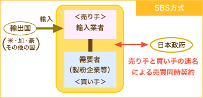
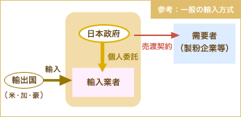
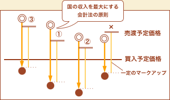
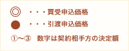

食糧用麦の一部の銘柄について、既に米穀において導入されているSBS方式を導入。
SBS方式は、予め需要者及び輸入業者が結びつき、輸入銘柄、輸入港及び輸入時期等を選択でき、多様なニーズに応えられる仕組み。


【本船輸入】
プライムハード小麦（オーストラリア産、主に中華めん用）、デュラム小麦（主にカナダ産、パスタ・マカロニ用）、二条大麦（カナダ及びオーストラリア産、主に焼酎用）、六条大麦（カナダ産、主に麦茶用）
【コンテナ輸入】
国家貿易対象銘柄以外のものであって、一般輸入では対応できない小ロットの需要に対応するためのもの。
※小麦:
用途が概ね限定されており他銘柄との代替関係が比較的低く、かつ、需要量の全量をSBS方式に移行できる銘柄であることを考慮して対象銘柄を指定。
※大麦:
需要者の希望に応じてSBS方式を選択できる仕組みとする。外国産大麦需要の全量がSBS方式に移行するまでの間は、政府の一般輸入を併せて行い、安定供給を確保。
【本船輸入】
1,000トン
【コンテナ輸入】
100トン
一般の輸入方式に比べて政府の保管期間が短いこと等を踏まえて設定。
引渡申込価格が買入予定価格以下かつ買受申込価格が売渡予定価格以上であって、売買差額が大きい申込みを行った者から、順次契約の相手方として決定。

